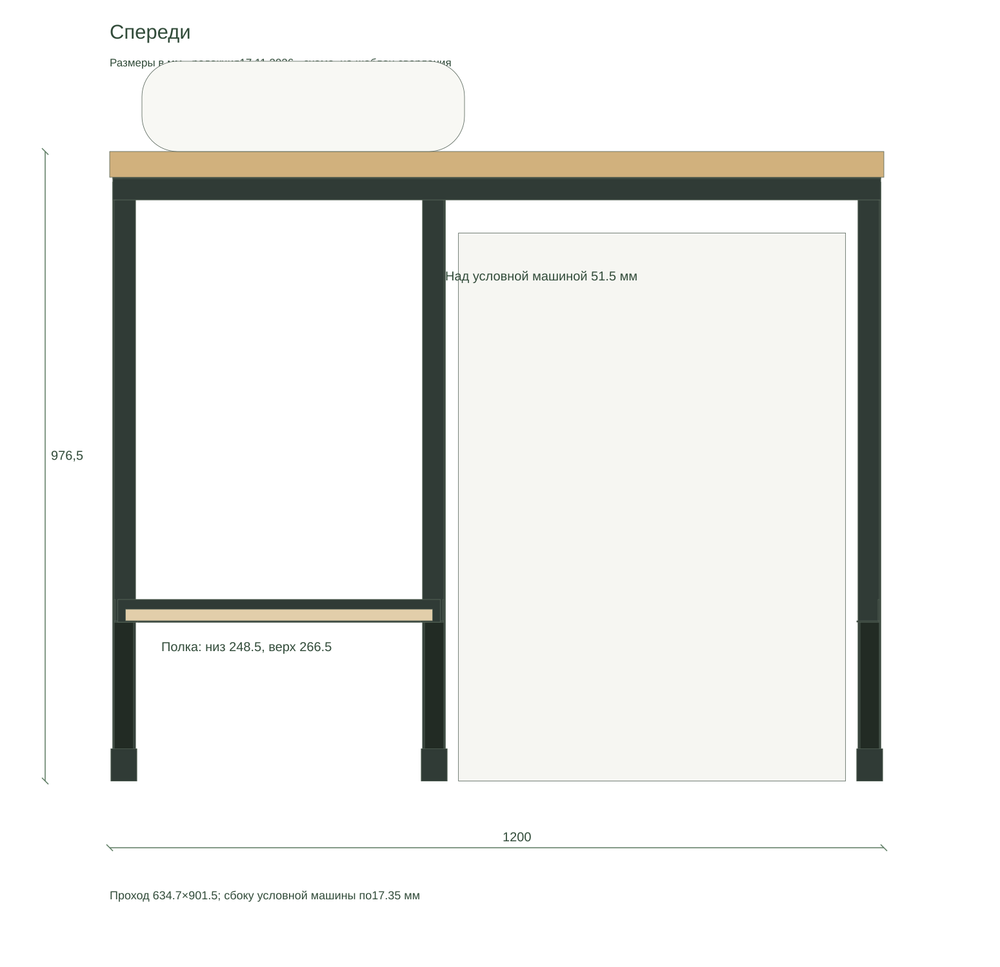
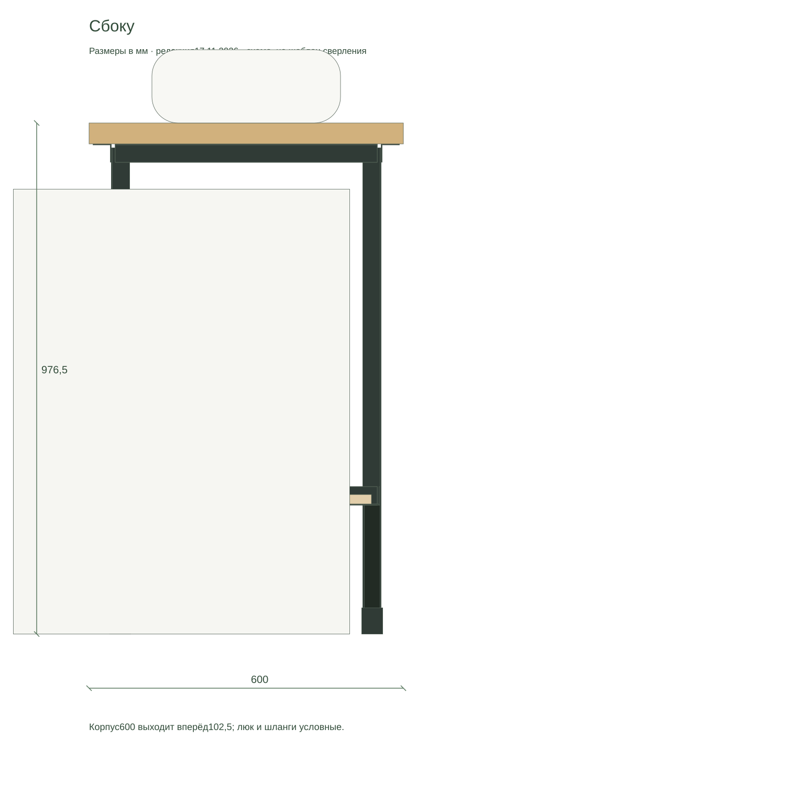
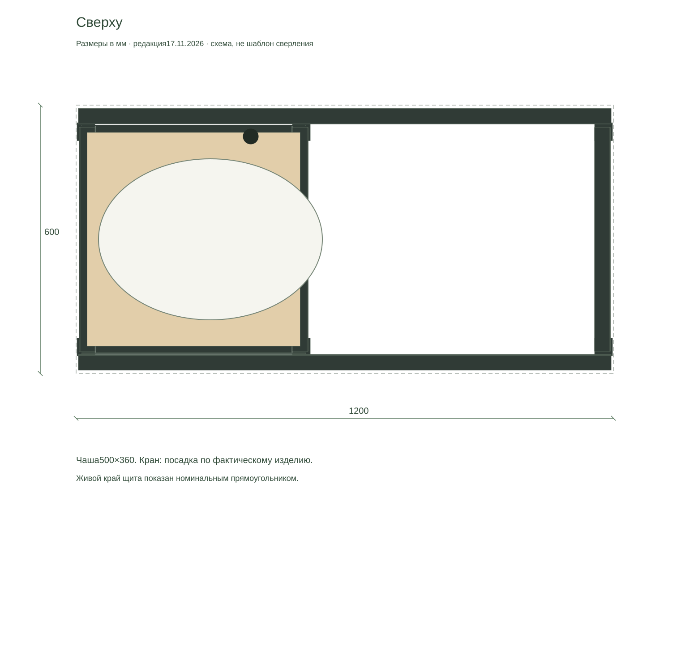
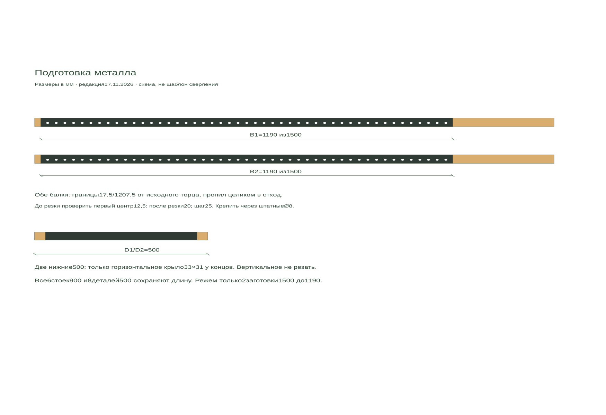
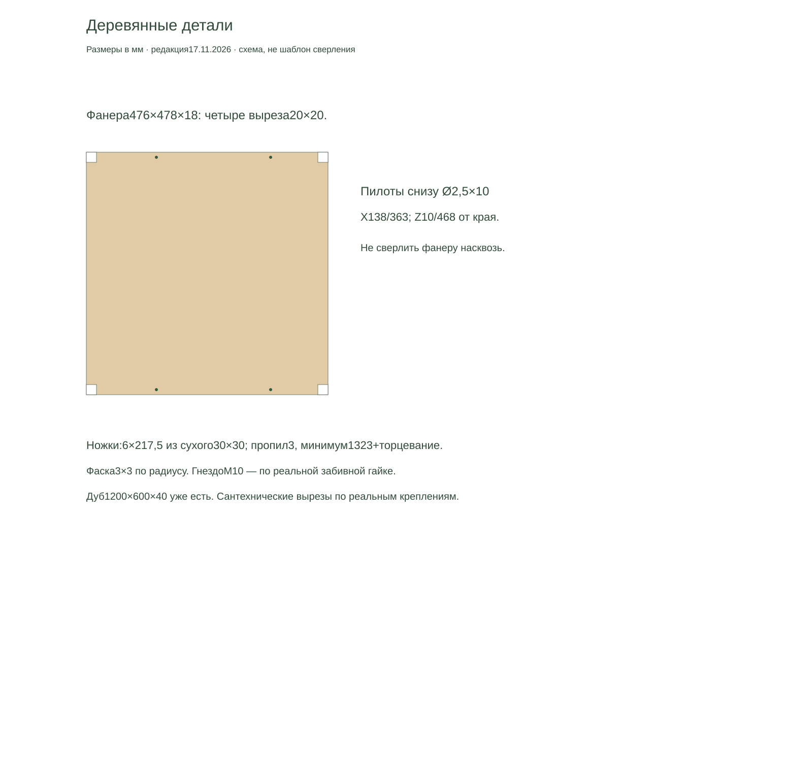
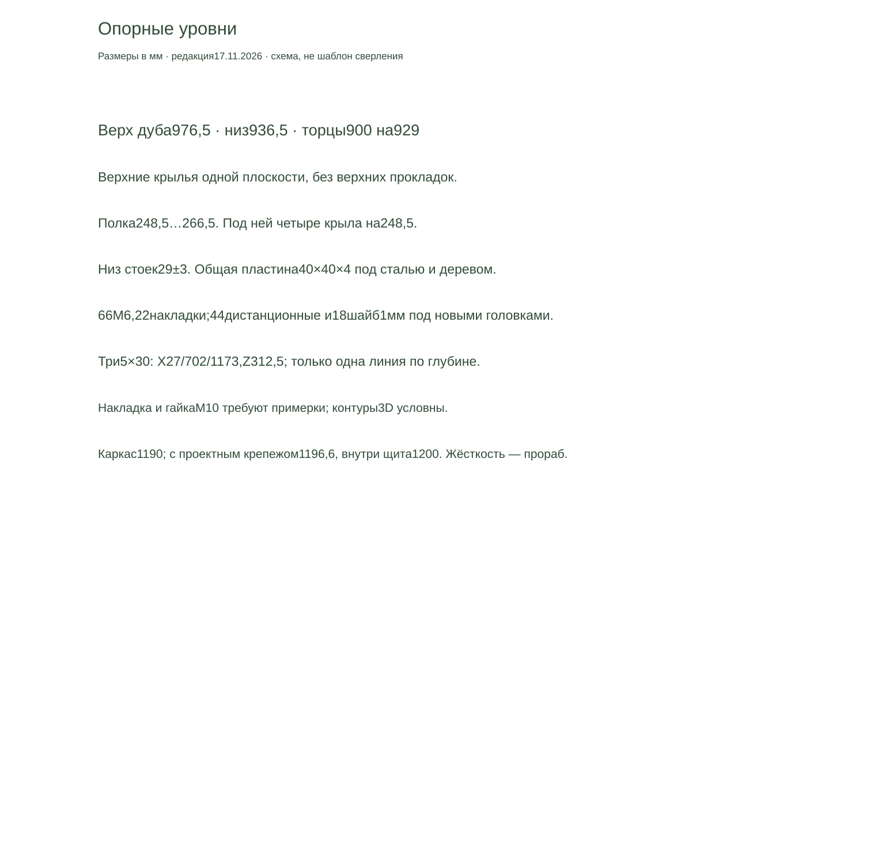

Дуб1200×600×40 · верх976,5 · регулировка±3мм.
Схемы поясняют компоновку. Перед сверлением примерить реальные накладки, забивные гайки и сантехнические крепления.
ДеталиCSV · Координаты66болтовCSV





